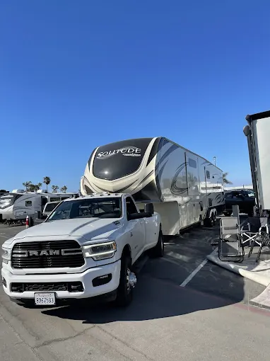

RV towing in Escondido, from right here in Escondido
Chato's is based in Escondido, so North County RV moves are close to home. Fifth wheels, travel trailers and toy haulers, moved by the owner.
- Loomis → San Diego
- Sacramento → San Diego
- Escondido → Yuma, AZ
- Arizona → San Diego
- Indio → Vista
- Palm Desert → Borrego Springs
- El Cajon → Jurupa Valley
- Escondido → Port of Long Beach
- San Diego → Los Angeles
- San Diego → Orange County
- San Diego → Las Vegas, NV
- San Diego → Hawaii, by ship
Escondido is home base
Most RV towing companies that show up in a search for Escondido are dispatching from somewhere else. Chato's truck lives here, which means shorter wait times for jobs in Escondido, San Marcos, Valley Center, Hidden Meadows and Rancho Bernardo.
Escondido also has some of the trickiest RV access in the county. Hillside homes off Bear Valley Parkway, long gravel drives in the San Pasqual Valley and steep lots in Hidden Meadows are everyday jobs for Jose, not reasons to say no.
RV towing jobs around Escondido
- Storage lot to driveway, and back again after the trip
- Setting fifth wheels at Escondido RV Resort and other local parks
- Hillside and gravel driveways in Hidden Meadows, Valley Center and San Pasqual
- Trips up SR-76 and SR-79 toward Palomar Mountain, Lake Henshaw and Warner Springs
- Dealer pickups up I-15 in Temecula and Murrieta
Not sure your spot is reachable with a 40-foot fifth wheel? Text a photo of the driveway or street. Jose will tell you straight.

RV transport out of Escondido
Escondido sits right on I-15 and SR-78, which makes it an easy start for long-distance RV transport north to the Inland Empire, Los Angeles and the Central Valley, or east to Arizona and Nevada. Bought a trailer out of the area? Jose can pick it up and bring it home to Escondido.
Car transport in Escondido too
The same truck pulls a dedicated car hauler. Chato's moves daily drivers, EVs, exotics and collector cars from Escondido one vehicle at a time, door to door, with wheel straps on every tire.
Escondido ZIP codes we serve
RV moving, RV transport and car transport anywhere in these ZIP codes, including Hidden Meadows, Felicita, Rancho San Pasqual, San Pasqual Valley, Old Escondido.
- 92025
- 92026
- 92027
- 92029
Why Escondido RV owners call Jose
Real reviews from Chato's Google Business Profile and Yelp. Same story every time: honest price, constant updates, and a driver who treats your RV like his own.
I hired Jose at Chato's Auto Transport to move a classic car across town Escondido. I told him it was ging to be a diffficult pickup backing in off a narrow driveway up a steep dirt driveway at a 90 degrees angle. To assure the feasibility he went out in advance to look at the challenge. He quoted me a very resonable fee and stuck to it. From the first call he kept me informed via text of every move, some with pictures. He was likeable, very easy to work with and very professional.
All I can say is WOW!! Jose's experience and patience is exceptional. He was able to bring a 43' fifth wheel into a space that it should have never fit. But he did it. His patience and care exceeded my expectations. His concern for my property was above and beyond.
Jose was a hero who rescued our boat on a trailer from the side of the freeway in Rancho Bernardo after a trailer axle failure issue. So appreciated that he fit us into his Sunday, communicated clearly on his schedule, and serious problem solving once he got to the boat to figure out how to get the boat/trailer (missing a wheel) onto his trailer.
I had a 43ft 5th wheel I needed transported last minute, so I jumped online, seen Chato's Auto Transport ad, seen the 5 star reviews and reached out. Not only did Jose answer quickly, but he was very polite & he was able to meet me at my rv within an hour. He hooked right up & transported it to the location. He is an exceptional driver who can get whatever you need moved, but he does it with care, efficiency & the experience of someone who has been doing this for a long time! I have since hired him to transport my 5th wheel multiple times & wouldn't want anyone else.
When it comes to transport 1) I worry 2) I research the heck out of who is a good option and 3) this is an industry with many dishonest people. If you have any of these concerns, Jose Barba/ Charo Transport is your best possible option. I needed a vintage trailer moved from Sacramento to San Diego quickly after I made a bad choice and had to fire a transporter who lied and changed stories. He was responsive, kind, constant updates, on time as much as traffic would permit and extremely professional.
Very professional, fast and even fixed my 5th wheels jack system just to help us out because ours wasn’t working. Extremely polite and helpful would definitely recommend!! I will be a returning customer
RV towing in Escondido: common questions
How fast can you get to me in Escondido?
Escondido is where the truck is parked, so local jobs are often scheduled the same day or next day. Call for anything urgent.
Can you get a fifth wheel up a steep driveway?
Usually, yes. Steep and narrow driveways are common in Escondido. Send a photo of the driveway and the parking spot, and Jose will tell you before booking.
Do you serve San Marcos and Valley Center?
Yes. San Marcos, Valley Center, Hidden Meadows, Rancho Bernardo, Ramona and Poway are all part of the regular North County area.
Other cities we serve
Chato's covers all of San Diego County and southwest Riverside County from its Escondido base.
Moving an RV in Escondido?
Text the pickup spot, the drop-off and the RV length. Jose will reply with a price.